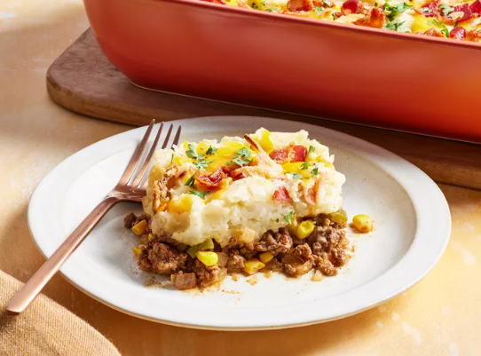

Cowboy Mashed Potato Casserole
Home

Description
This cowboy mashed potato casserole, a smoky beef and veggie mixture topped with creamy mashed potatoes, is like a cowboy version of a shepherds pie. The crispy bacon and French fried onions on top add crunch and flavor.
Ingredients
- cooking spray
- 6 strips of bacon
- 2 pounds baking potatos, peeled and chopped
- 5 ounce can evaporated or whole milk
- 2 tablespoons butter
- 1 1/2 teaspoons salt, divided
- 1/2 teaspoon freshly ground black pepper
- 1 pound ground beef
- 1 cup chopped onion
- 1 green bell pepper, chopped
- 1 cup frozen whole kernel corn
- 2 cloves garlic, minced
- 1 1/2 teaspoons smoked paprika
- 1/4 cup barbeque sauce
- 1 tablespoon Worcestershire sauce
- 1 teaspoon Dijon mustard
- 1/2 cup shredded cheddar or pepper jack cheese
- 1/4 cup canned french fried onions
- 2 tablespoons finely chopped fresh parsley
Directions
- Gather all ingredients.
- Preheat the oven to 375 degrees F (190 degrees C). Grease a 2-quart baking dish with cooking spray. Place baking dish on a baking sheet.
- Cook bacon in a large skillet over medium heat, turning occasionally, until crisp, about 10 minutes. Place bacon on a paper towel to drain. Drain all but 1 tablespoon of bacon fat in the skillet. Chop bacon when cool enough to handle.
- Meanwhile, bring a large pot of salted water to a boil. Add potatoes and return to a boil. Cook, covered, until potatoes are fork tender, 15 to 20 minutes. Drain potatoes. Return potatoes back to the pot along with evaporated milk, butter, 1/2 teaspoon salt, and 1/2 teaspoon pepper.
- Mash potatoes with a potato masher until smooth. Stir 1/4 cup chopped bacon into mashed potatoes.
- Add ground beef, onion, and bell pepper to the skillet with reserved bacon fat. Cook over medium heat until meat is browned and cooked through, stirring occasionally, 8 to 10 minutes.
- Add corn kernels, garlic, and paprika to the skillet. Cook and stir for 1 minute.
- Stir in barbecue sauce, Worcestershire sauce, mustard, remaining 1 teaspoon salt, and 1/2 teaspoon pepper.
- Spread ground beef mixture in prepared baking dish.
- Spread potatoes evenly over beef. Sprinkle with cheese, remaining bacon, and French fried onions.
- Bake until meat mixture is bubbly and cheese is melted, 20 to 25 minutes. Garnish with parsley before serving.